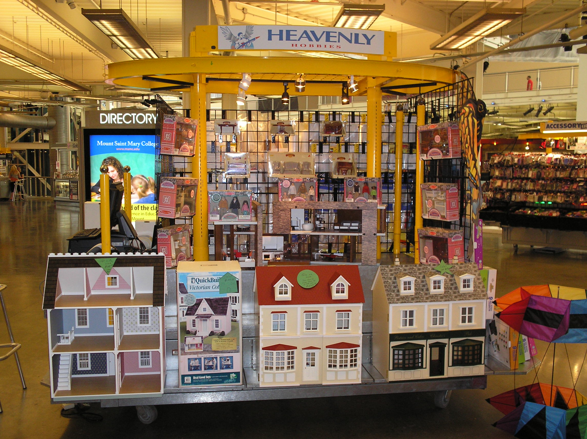

DOLL HOUSE
A dollhouse or doll's house is a toy home made in miniature. Since the early 20th century dollhouses have primarily been the domain of children, but their collection and crafting is also a hobby for many adults. English-speakers in North America commonly use the term dollhouse, but in the United Kingdom and other English-speaking countries the term is doll's house (or, less commonly, dolls' house).
WHERE WILL YOU FIND THEM
You will find the doll house store on the second floor close to the book store.